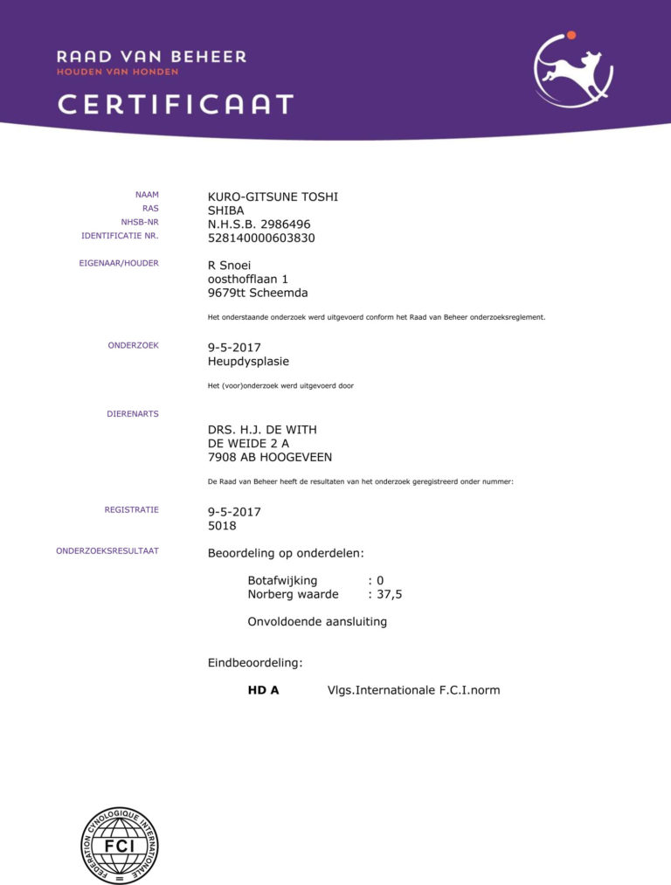
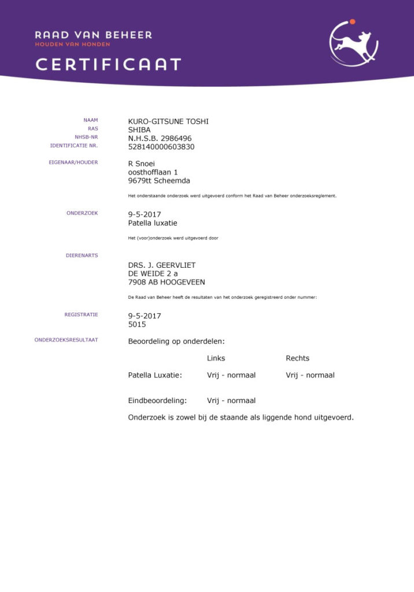
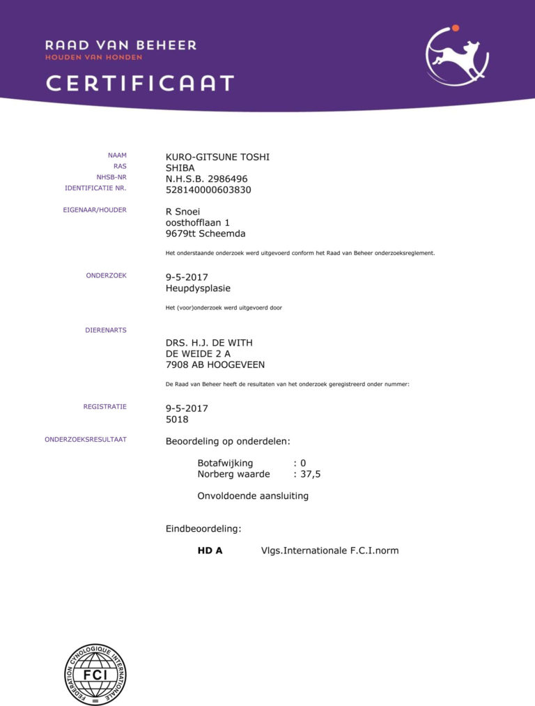
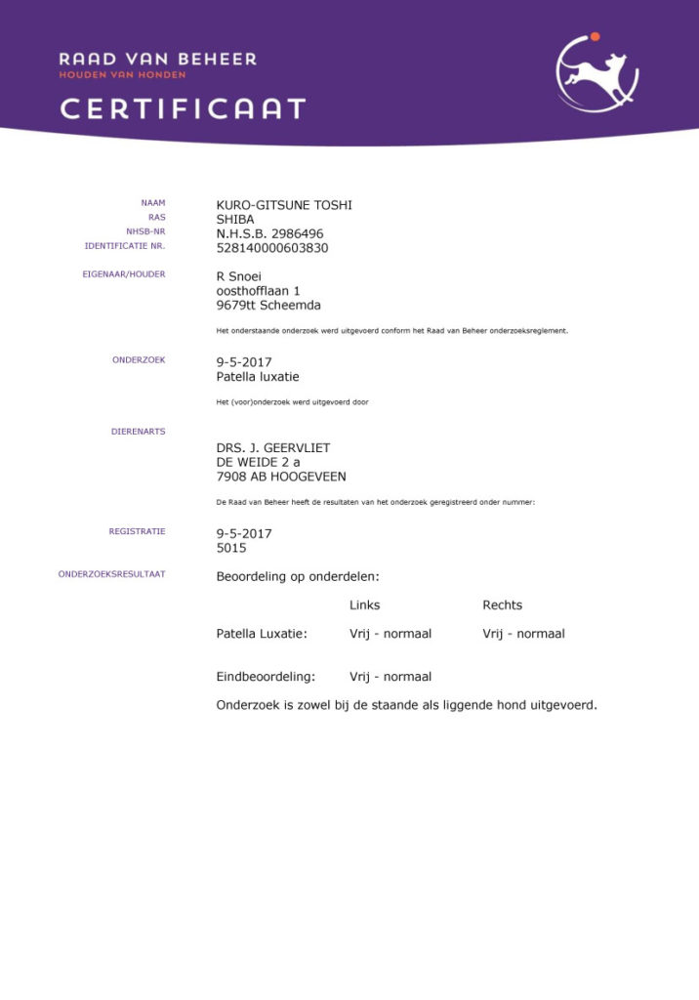

Uitslagen
De uitslagen zijn binnen. Dat was even spannend maar de uitslagen zijn goed. Haar knieen en heupen zijn perfect! Wat een opluchting. Dat wordt weer lekker in de bergen rennen van de zomer.
Haar ogen hebben wel een kleine afwijking. Tijdens de ontwikkeling van het oog bevinden zich weefseldraadjes voor de iris, de membrana pupillaris. Deze verdwijnt na de geboorte. Soms blijft er iets achter, dit is ook bij Oki het geval. Het gaat om een heel klein draadje. De dierenarts heeft aangegeven dat ze hier geen last van heeft en ook niet zal krijgen in de toekomst. Helaas betekend dit wel dat haar ogen niet vrij zijn van afwijkingen. Je mag met deze afwijking nog steeds met je hond fokken aldus de rasvereniging. De voorwaarde is dan dat het reutje geen oogafwijking heeft. Hier gaan we dus rekening mee houden in onze zoektoch naar de geschikte man voor Oki.
Zie hieronder de testresultaten van de onderzoeken.
 


